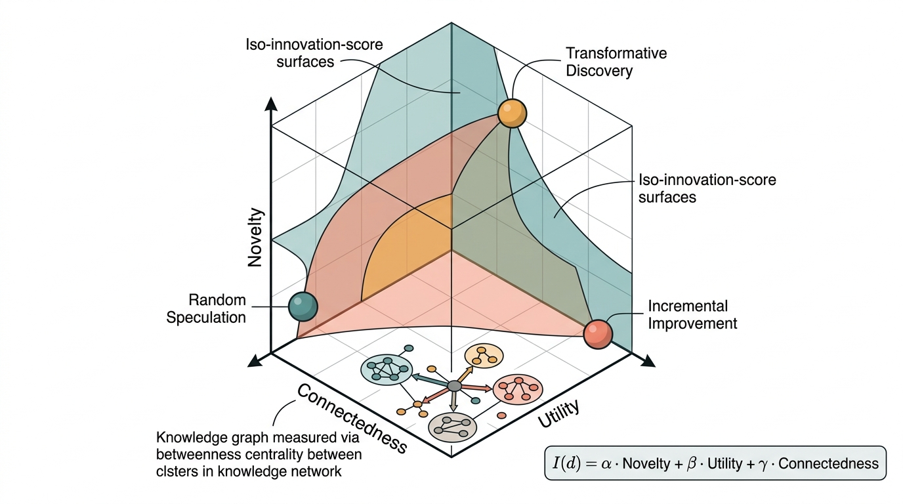

Prerequisites
This section builds directly on the AI scientist architectures from Chapter 53, where we constructed end-to-end autonomous research agents. The hypothesis generation techniques of Chapter 39 provide the creative substrate that autonomous innovation extends. Familiarity with the optimization frameworks from Chapter 45 helps with the formal treatment of novelty search. The evaluation metrics from Chapter 56 ground our discussion of measuring innovation capacity.
Every Discovery AI system we have built in this book solves problems that a human has already framed. The optimization agent in Chapter 45 finds the best configuration, but a human chose the objective function. The hypothesis generator in Chapter 39 proposes explanations, but a human identified the phenomenon that needs explaining. Autonomous innovation is the step beyond: AI systems that identify which problems are worth solving, which phenomena are worth investigating, and which research directions are likely to yield high-impact discoveries. This section examines what that step requires technically, organizationally, and theoretically.
1. The Problem-Solving to Problem-Finding Spectrum
What if the most important experiment in your field is one that no human has thought to run, not because it is too difficult, but because the question lies outside every researcher's mental model? Every Discovery AI system built so far in this book solves problems that a human already framed. Yet the history of science is littered with breakthroughs that came from asking an unexpected question rather than answering an expected one. The spectrum of discovery autonomy stretches from systems that execute a predefined experimental protocol (run this simulation with these parameters, report the outputs) to systems that identify gaps in scientific understanding, formulate research programs, and carry out those programs with minimal human oversight. Current systems cluster at the lower end of this spectrum, but the trajectory points toward increasing autonomy.
We can formalize this spectrum as a hierarchy of discovery autonomy levels, analogous to the Society of Automotive Engineers (SAE) levels for autonomous vehicles. Table 58.1 presents a six-level taxonomy that maps where current systems sit and where the field is headed.
| Level | Name | AI Role | Human Role | Example Systems |
|---|---|---|---|---|
| 0 | Manual | None | All decisions | Traditional lab work |
| 1 | Assisted | Data analysis, visualization | Hypothesis, experiment, interpretation | Jupyter + ML libraries |
| 2 | Partially Automated | Experiment execution, hyperparameter search | Problem framing, goal setting, validation | AutoML, Bayesian optimization |
| 3 | Conditionally Autonomous | Hypothesis generation, experiment design, analysis | Problem selection, safety oversight, final judgment | AI Scientist, Coscientist, ADAM |
| 4 | Highly Autonomous | Problem identification within a domain, full research cycle | Domain boundary setting, ethical oversight | Emerging (2025+) |
| 5 | Fully Autonomous | Cross-domain problem identification, research agenda setting | Value alignment, societal oversight | Hypothetical |
The critical transition in this hierarchy is from Level 3 to Level 4: the shift from problem-solving to problem-finding. This is not merely a quantitative improvement in automation. It requires qualitatively different capabilities: the ability to assess the significance of potential research questions, to identify gaps in existing knowledge, and to predict which lines of inquiry will be productive. The following sections address each of these capabilities in turn.
Common Misconception
A frequent misunderstanding is that moving up the autonomy levels means progressively removing humans from the loop, with Level 5 as the ultimate goal. In reality, each level redefines the human role rather than eliminating it: at Level 4, humans set domain boundaries and ethical guardrails; at Level 5, humans provide value alignment and societal oversight. The hierarchy describes a shift in what humans contribute (from routine execution to high-level governance), not a trajectory toward zero human involvement.
In optimization terms, problem-solving operates within a fixed objective landscape. The agent knows what "better" means and searches for it. Problem-finding requires constructing the objective landscape itself: deciding which fitness function to optimize, which variables to include, and which constraints matter. This is a meta-level task that demands not just competence within a domain but understanding of what the domain values. The gap between Levels 3 and 4 is not incremental; it is categorical.
2. The Innovation Economy: Where Discovery Value Comes From
To build systems that find valuable problems, we need a formal model of what makes a scientific contribution valuable. The innovation economy provides this framework: it treats scientific discoveries as assets whose value depends on novelty, utility, and connectedness to existing knowledge. We can operationalize these three dimensions.
Mental Model
Think of the innovation economy like a city's real estate market. A new building (discovery) gains value from three factors: how architecturally distinctive it is compared to existing buildings (novelty), how many residents and businesses it can serve (utility), and how well it connects to roads, transit lines, and neighboring districts (connectedness). A building that is wildly distinctive but sits in an unreachable location has low total value, just as a maximally novel discovery that connects to nothing has limited scientific impact. The most valuable buildings are those that anchor a new transit hub, linking previously disconnected neighborhoods; likewise, the most transformative discoveries bridge fields that had no prior connection.
Novelty measures how different a discovery is from prior work. In information-theoretic terms, a maximally novel discovery has high surprisal (where surprisal is the negative log-probability of an event, quantifying how unexpected it is) relative to the distribution of existing knowledge. We can approximate this using embedding distances in a scientific knowledge graph (Chapter 38):
$$\text{Novelty}(d) = 1 - \max_{d' \in \mathcal{D}_{\text{prior}}} \text{sim}(\mathbf{e}_d, \mathbf{e}_{d'})$$where \(\mathbf{e}_d\) is the embedding of discovery \(d\) and \(\mathcal{D}_{\text{prior}}\) is the set of prior discoveries. But raw novelty alone is insufficient: a random string has maximum novelty but zero scientific value.
Utility captures how much downstream work a discovery enables. We can approximate future utility using citation prediction models or, more structurally, by measuring how many currently unsolvable problems the discovery would unblock. A discovery that provides a missing reagent, a missing theorem, or a missing dataset for multiple research programs has high utility.
Connectedness measures how well a discovery integrates with existing knowledge. The most impactful discoveries are often those that bridge previously unconnected fields. We can quantify this using the betweenness centrality (where betweenness centrality is a graph metric that counts how often a node lies on the shortest path between other node pairs, indicating its role as a bridge) of the new concept node in a knowledge graph augmented with the proposed discovery.
As Figure 58.2 illustrates, these three dimensions feed into a composite innovation score that an autonomous innovator uses to prioritize research directions.
Combining the Three Dimensions
Combining these dimensions yields a composite innovation score:
$$I(d) = \alpha \cdot \text{Novelty}(d) + \beta \cdot \text{Utility}(d) + \gamma \cdot \text{Connectedness}(d)$$The weights \(\alpha, \beta, \gamma\) reflect the values of the scientific community. Fields in crisis (Kuhnian paradigm shifts, the revolutionary replacements of an entire field's foundational assumptions as described by Thomas Kuhn,) weight novelty heavily. Applied fields weight utility. Interdisciplinary programs weight connectedness. An autonomous innovator must learn these weights from the field it operates in. In short: a discovery that is novel but useless, useful but obvious, or connected but trivial changes nothing; only the rare idea that scores high on all three dimensions reshapes a field. Figure 58.1.1 illustrates the innovation scoring framework with novelty, utility, and connectedness dimensions.

Consider Google DeepMind's GNoME system (Merchant et al., 2023), which predicted 2.2 million stable crystal structures. On raw novelty, each new structure scores moderately: it differs from known structures but was predicted by extrapolating known patterns. On utility, the score is high: experimentalists immediately began synthesizing candidates, and 736 were independently verified within months. On connectedness, the score is extraordinary: GNoME bridges computational chemistry, condensed matter physics, and manufacturing engineering. The composite innovation score explains why GNoME received a Nature cover despite using conceptually straightforward methods (graph neural networks (GNNs) on crystal graphs). The innovation was not in the technique but in the scale and the bridging.
3. Novelty Search and Open-Ended Evolution
The challenge is searching for discoveries that score highly on novelty, utility, and connectedness simultaneously, especially when the most valuable regions of idea space are the ones no one has explored yet.
In practice, discovery agents that optimize a single objective (prediction accuracy, binding affinity, p-value) converge on incremental refinements of known results, leaving entire regions of idea space permanently unexplored; many of the most consequential breakthroughs tend to sit in those blind spots.
Traditional optimization converges on a fixed objective. Novelty search, introduced by Lehman and Stanley (2011), instead rewards solutions for being different from anything previously found. This turns out to be surprisingly effective for finding high-quality solutions in deceptive fitness landscapes (landscapes where the gradient of the objective function leads away from the global optimum, trapping naive optimizers in local optima), where the direct path to the optimum passes through regions of low fitness. (An agent that never pursues the goal often finds it faster than one that chases it directly.)
Novelty search replaces the traditional fitness function with a measure of behavioral distance from all previously visited solutions. It matters because conventional objective-driven optimization frequently gets trapped in local optima; by ignoring the objective entirely and rewarding only difference, the search process sidesteps deceptive gradients that mislead goal-directed agents. The core mechanism: embed each candidate solution in a behavior space, then score its "fitness" as the average distance to its k nearest neighbors in an ever-growing archive of past solutions. Use novelty search instead of objective-driven optimization when the fitness landscape is deceptive (the gradient points away from the global optimum). It also applies when you want diverse coverage of a solution space or cannot specify the objective in advance.
Novelty search is one instance of a broader paradigm: open-ended evolution, in which a system continually generates new forms of increasing complexity without converging on a fixed goal. In biological evolution, open-endedness produces an ever-expanding tree of species rather than a single "optimal organism." Computational open-ended evolution systems such as Picbreeder and POET extend novelty search by co-evolving both solutions and the environments that test them, so the challenges grow in lockstep with the agents' capabilities. For autonomous innovation, open-ended evolution offers a compelling template: rather than searching for the single best research idea, the system cultivates an expanding ecosystem of research directions that generate their own successor questions, each new finding opening territory that did not previously exist.
The connection to autonomous innovation is direct. A discovery agent that only optimizes a fixed scientific metric (prediction accuracy, synthesis yield, p-value) will converge on incremental improvements to known approaches. A novelty-seeking agent explores the space of possible research directions, sometimes stumbling onto high-value regions that a purely exploitation-driven strategy would never reach.
We can implement novelty search for research idea generation by maintaining an archive of previously explored ideas (represented as embeddings) and rewarding new ideas for their distance from the archive. The following implementation extends the hypothesis generation framework from Chapter 39 with a novelty-driven selection mechanism.
"""
Novelty-seeking research idea generator.
Uses embedding-space distance from an archive of prior ideas
to drive exploration toward genuinely novel research directions.
"""
import numpy as np
from dataclasses import dataclass, field
from typing import Optional
from sentence_transformers import SentenceTransformer
@dataclass
class ResearchIdea:
"""A candidate research direction with novelty metadata."""
title: str
description: str
embedding: Optional[np.ndarray] = field(default=None, repr=False)
novelty_score: float = 0.0
utility_estimate: float = 0.0
innovation_score: float = 0.0
class NoveltyArchive:
"""
Maintains an archive of explored research ideas and computes
novelty scores for new candidates using k-nearest-neighbor
distance in embedding space.
The archive grows monotonically: every idea that passes the
novelty threshold is added, ensuring the system never revisits
explored regions of idea space.
"""
def __init__(
self,
model_name: str = "all-MiniLM-L6-v2",
k_neighbors: int = 15,
novelty_threshold: float = 0.3,
):
self.encoder = SentenceTransformer(model_name) # as of 2025, newer models such as all-mpnet-base-v2 or domain-specific encoders from the MTEB leaderboard may offer stronger embeddings
self.k_neighbors = k_neighbors
self.novelty_threshold = novelty_threshold
self.archive: list[ResearchIdea] = []
self._embeddings: list[np.ndarray] = []
def compute_novelty(self, idea: ResearchIdea) -> float:
"""
Compute novelty as mean distance to k nearest neighbors
in the archive. Returns 1.0 for the first idea (maximally
novel when the archive is empty).
"""
if not self._embeddings:
return 1.0
# Embed the idea description
if idea.embedding is None:
idea.embedding = self.encoder.encode(
idea.description, normalize_embeddings=True
)
# Compute cosine distances to all archived ideas
archive_matrix = np.stack(self._embeddings)
similarities = archive_matrix @ idea.embedding
distances = 1.0 - similarities
# Novelty = mean distance to k nearest neighbors
k = min(self.k_neighbors, len(distances))
nearest_k = np.sort(distances)[:k]
novelty = float(np.mean(nearest_k))
idea.novelty_score = novelty
return novelty
def maybe_add(self, idea: ResearchIdea) -> bool:
"""Add idea to archive if it exceeds the novelty threshold."""
novelty = self.compute_novelty(idea)
if novelty >= self.novelty_threshold:
if idea.embedding is None:
idea.embedding = self.encoder.encode(
idea.description, normalize_embeddings=True
)
self.archive.append(idea)
self._embeddings.append(idea.embedding)
return True
return False
def score_innovation(
self,
idea: ResearchIdea,
alpha: float = 0.4,
beta: float = 0.4,
gamma: float = 0.2,
) -> float:
"""
Composite innovation score combining novelty, estimated
utility, and connectedness (approximated here by the
variance of distances to archived ideas, which is high
when an idea bridges disparate regions).
"""
if idea.embedding is None:
idea.embedding = self.encoder.encode(
idea.description, normalize_embeddings=True
)
novelty = self.compute_novelty(idea)
utility = idea.utility_estimate # Set externally
# Connectedness proxy: high variance in distances means
# the idea is close to some clusters and far from others,
# suggesting it bridges distinct research areas
if len(self._embeddings) > 1:
archive_matrix = np.stack(self._embeddings)
similarities = archive_matrix @ idea.embedding
connectedness = float(np.std(similarities))
else:
connectedness = 0.0
idea.innovation_score = (
alpha * novelty + beta * utility + gamma * connectedness
)
return idea.innovation_score
def run_novelty_search(
idea_generator, # callable that yields ResearchIdea candidates
archive: NoveltyArchive,
max_iterations: int = 1000,
top_k: int = 10,
) -> list[ResearchIdea]:
"""
Run novelty search over a stream of research idea candidates.
Unlike standard optimization, this does not converge to a single
best idea. It explores the space of ideas, accumulating a diverse
archive and returning the top-k by innovation score.
Parameters
----------
idea_generator : callable
A generator that yields ResearchIdea objects. Typically
wraps an LLM-based hypothesis generator (Chapter 39).
archive : NoveltyArchive
The novelty archive that tracks explored idea space.
max_iterations : int
Maximum number of ideas to evaluate.
top_k : int
Number of top-scoring ideas to return.
Returns
-------
list[ResearchIdea]
The top-k ideas ranked by composite innovation score.
"""
evaluated = []
for i, idea in enumerate(idea_generator()):
if i >= max_iterations:
break
# Score and potentially archive
archive.maybe_add(idea)
archive.score_innovation(idea)
evaluated.append(idea)
if (i + 1) % 100 == 0:
avg_novelty = np.mean([e.novelty_score for e in evaluated[-100:]])
print(
f"Iteration {i+1}: archive size={len(archive.archive)}, "
f"avg novelty (last 100)={avg_novelty:.3f}"
)
# Return top-k by innovation score
evaluated.sort(key=lambda x: x.innovation_score, reverse=True)
return evaluated[:top_k]
score_innovation method combines novelty, utility, and a connectedness proxy into a composite innovation score.Exercise 58.1.1
Suppose you have a novelty archive containing five research ideas with the following pairwise cosine similarities to a new candidate idea: 0.92, 0.78, 0.61, 0.45, 0.30. Using \(k = 3\) nearest neighbors, compute the novelty score for the candidate. Then determine whether the candidate would be added to the archive if the novelty threshold is 0.3. Finally, explain why using \(k = 1\) instead of \(k = 3\) would change the result and which setting favors more aggressive exploration.
Hint
Convert similarities to distances via \(d = 1 - \text{sim}\), sort the distances in ascending order, and take the mean of the smallest \(k\) values. With \(k = 3\) the three nearest neighbors have similarities 0.92, 0.78, and 0.61 (distances 0.08, 0.22, 0.39), so the novelty score is the mean of those three distances. Compare that mean to the threshold 0.3. For the \(k = 1\) case, only the single nearest neighbor (distance 0.08) is used, which produces a much lower novelty score and makes it harder for the candidate to pass the threshold.
The quality-diversity optimization library QDax (built on JAX) provides GPU-accelerated novelty search and MAP-Elites (where MAP-Elites is a quality-diversity algorithm that partitions behavior space into a grid of niches and maintains the single highest-performing solution in each niche) algorithms in approximately 20 lines of configuration. It replaces the manual archive management in Listing 58.1 with a vectorized, batched implementation that evaluates thousands of candidates per second on GPU. For research idea generation specifically, Voyager demonstrates large language model (LLM)-driven novelty search in open-ended exploration tasks. The manual implementation above clarifies the algorithm; for production use, prefer QDax for the search loop and an LLM API for idea generation.
Step-Through: Novelty Score Computation
Trace through the compute_novelty method with a tiny archive of three ideas
whose normalized embeddings (2D for clarity) are: \(\mathbf{a}_1 = [1.0,\; 0.0]\),
\(\mathbf{a}_2 = [0.71,\; 0.71]\), \(\mathbf{a}_3 = [0.0,\; 1.0]\). A new candidate has
embedding \(\mathbf{c} = [0.5,\; 0.87]\), and \(k = 2\).
Step 1. Compute cosine similarities (dot products, since vectors are normalized): \(\text{sim}(\mathbf{c}, \mathbf{a}_1) = 0.5\), \(\text{sim}(\mathbf{c}, \mathbf{a}_2) = 0.71 \times 0.5 + 0.71 \times 0.87 = 0.97\), \(\text{sim}(\mathbf{c}, \mathbf{a}_3) = 0.87\).
Step 2. Convert to distances: \(d_1 = 0.50\), \(d_2 = 0.03\), \(d_3 = 0.13\).
Step 3. Sort ascending: \([0.03,\; 0.13,\; 0.50]\). Take the \(k = 2\) smallest: \([0.03,\; 0.13]\).
Step 4. Novelty \(= \text{mean}(0.03, 0.13) = 0.08\). This candidate is very close to \(\mathbf{a}_2\) in embedding space, so it scores low on novelty and would not pass a threshold of 0.3. The archive correctly identifies it as a near-duplicate of an existing idea.
4. AI Research Organizations
Autonomous innovation at scale demands organizations: structured collections of specialized agents with defined roles, communication protocols, and collective decision-making. The multi-agent discovery systems from Chapter 54 provide the foundation; self-organizing research organizations extend them in three ways.
An AI research organization differs from a multi-agent team in three key ways:
- Persistent identity and memory. An organization maintains institutional knowledge across research projects. Individual agents may be instantiated and terminated, but the organization's knowledge base, research agenda, and methodological standards persist. This requires the kind of long-term memory architectures discussed in Chapter 37.
- Self-governance. The organization allocates resources (compute, data access, experimental time) across competing research proposals using internal review processes. This is a multi-objective optimization problem where the objectives include scientific impact, resource efficiency, and portfolio diversity.
- Adaptive structure. The organization can create new roles, merge teams, and restructure itself in response to research outcomes. A materials science organization that discovers an unexpected connection to biology might spawn a new cross-disciplinary team without human intervention.
The following code sketches the core abstraction for an AI research organization, building on the multi-agent coordination patterns from Chapter 54.
"""
AI Research Organization: a persistent, self-governing collection
of specialized discovery agents with shared institutional memory.
"""
from dataclasses import dataclass, field
from enum import Enum
from typing import Any
class ResearchPhase(Enum):
IDEATION = "ideation"
LITERATURE_REVIEW = "literature_review"
EXPERIMENT_DESIGN = "experiment_design"
EXECUTION = "execution"
ANALYSIS = "analysis"
WRITING = "writing"
REVIEW = "review"
@dataclass
class ResearchProposal:
"""A proposal for a research direction within the organization."""
title: str
rationale: str
estimated_impact: float # 0-1 scale
estimated_cost: float # Compute hours
required_capabilities: list[str]
innovation_score: float = 0.0
phase: ResearchPhase = ResearchPhase.IDEATION
results: dict[str, Any] = field(default_factory=dict)
@dataclass
class AgentRole:
"""A role within the organization, filled by one or more agents."""
name: str
capabilities: list[str]
current_assignments: list[str] = field(default_factory=list)
max_concurrent: int = 3
class AIResearchOrganization:
"""
A self-governing AI research organization that maintains
a portfolio of research projects, allocates agent resources,
and adapts its structure based on outcomes.
This is the Level 4+ architecture from Table 58.1:
the organization identifies problems, not just solves them.
"""
def __init__(
self,
name: str,
domain: str,
compute_budget: float,
novelty_archive: "NoveltyArchive",
):
self.name = name
self.domain = domain
self.compute_budget = compute_budget
self.novelty_archive = novelty_archive
# Persistent organizational state
self.roles: dict[str, AgentRole] = {}
self.active_projects: list[ResearchProposal] = []
self.completed_projects: list[ResearchProposal] = []
self.institutional_memory: list[dict] = []
def propose_research(
self, n_proposals: int = 10
) -> list[ResearchProposal]:
"""
Generate research proposals using novelty search over
the organization's domain. Proposals are scored by the
innovation metric and ranked for internal review.
"""
proposals = []
for idea in self._generate_ideas(n_proposals):
proposal = ResearchProposal(
title=idea.title,
rationale=idea.description,
estimated_impact=idea.utility_estimate,
estimated_cost=self._estimate_cost(idea),
required_capabilities=self._identify_capabilities(idea),
innovation_score=idea.innovation_score,
)
proposals.append(proposal)
# Internal review: rank by innovation score normalized
# by estimated cost (impact per compute hour)
proposals.sort(
key=lambda p: p.innovation_score / max(p.estimated_cost, 1.0),
reverse=True,
)
return proposals
def allocate_resources(
self, proposals: list[ResearchProposal]
) -> list[ResearchProposal]:
"""
Portfolio optimization: select a subset of proposals that
maximizes total expected innovation within the compute budget,
subject to capability constraints.
This is a variant of the knapsack problem with additional
diversity constraints (we penalize proposals that are too
similar to each other in embedding space).
"""
selected = []
remaining_budget = self.compute_budget
for proposal in proposals:
if proposal.estimated_cost <= remaining_budget:
# Check capability availability
if self._capabilities_available(proposal):
selected.append(proposal)
remaining_budget -= proposal.estimated_cost
self._assign_agents(proposal)
self.active_projects.extend(selected)
return selected
def learn_from_outcomes(self) -> dict[str, float]:
"""
After projects complete, update the organization's
understanding of what works. This adjusts the innovation
scoring weights (alpha, beta, gamma) based on which
projects yielded high-impact results.
"""
if not self.completed_projects:
return {}
# Compute correlation between predicted and actual impact
predicted = [p.innovation_score for p in self.completed_projects]
actual = [
p.results.get("actual_impact", 0.0)
for p in self.completed_projects
]
# Store lesson in institutional memory
lesson = {
"n_projects": len(self.completed_projects),
"prediction_correlation": float(
np.corrcoef(predicted, actual)[0, 1]
) if len(predicted) > 1 else 0.0,
"top_domains": self._identify_productive_domains(),
}
self.institutional_memory.append(lesson)
return lesson
def _generate_ideas(self, n: int):
"""Placeholder for LLM-driven idea generation."""
raise NotImplementedError("Connect to hypothesis generator")
def _estimate_cost(self, idea) -> float:
"""Estimate compute cost from idea complexity."""
return 100.0 # Placeholder
def _identify_capabilities(self, idea) -> list[str]:
"""Identify required agent capabilities for an idea."""
return ["literature_search", "experiment_design"]
def _capabilities_available(self, proposal) -> bool:
"""Check if required capabilities are available."""
return True # Simplified
def _assign_agents(self, proposal) -> None:
"""Assign available agents to a proposal."""
pass
def _identify_productive_domains(self) -> list[str]:
"""Identify which sub-domains yielded the best results."""
return [self.domain]
5. Theoretical Limits of Autonomous Discovery
Before investing in ever-larger AI research organizations, it is worth asking whether there are fundamental boundaries on what any autonomous system can discover, regardless of its architecture or scale.
Can an AI system discover anything a human scientist could? This question has formal answers from computational learning theory and algorithmic information theory that constrain our expectations.
The No Free Lunch theorem for discovery. Wolpert and Macready (1997) showed that no optimization algorithm outperforms random search when averaged over all possible fitness landscapes. The discovery analogue is that no general-purpose discovery agent outperforms random exploration when averaged over all possible scientific domains. The practical implication is positive: the power of discovery agents comes from their inductive biases (where an inductive bias is the set of assumptions an algorithm uses to generalize from observed data to unseen cases), their assumptions about the structure of the domain. An agent designed for chemistry (with built-in knowledge of atomic physics, reaction mechanisms, and synthesis constraints) will dramatically outperform a generic agent in chemistry, precisely because it does not try to be good at everything.
Kolmogorov complexity and discoverable patterns. A scientific law is a compact description of a regularity in data. In algorithmic information theory, this means the law has low Kolmogorov complexity (the length of the shortest program that produces a given output, serving as a formal measure of an object's intrinsic complexity) relative to the data it explains. The compressibility of natural phenomena is what makes science possible at all. Autonomous discovery agents are, in essence, compression algorithms: they search for short programs (laws, equations, models) that reproduce large datasets. The theoretical limit is the Kolmogorov complexity of the data-generating process, which is uncomputable in general but can be approximated by the symbolic regression techniques from Chapter 35.
Checkpoint
So far: the No Free Lunch theorem tells us that discovery agents derive their power from domain-specific inductive biases rather than generality, and Kolmogorov complexity establishes that scientific laws are fundamentally compression problems, with the theoretical limit set by the intrinsic complexity of the data-generating process.
We can formalize the discovery problem as finding a description \(h\) that minimizes:
$$\mathcal{L}(h) = -\log P(\text{data} \mid h) + \lambda \cdot K(h)$$where \(P(\text{data} \mid h)\) is the likelihood of the observed data under hypothesis \(h\), \(K(h)\) is the description length of \(h\), and \(\lambda\) controls the complexity penalty. This is precisely the Minimum Description Length (MDL) principle that underlies many discovery algorithms. The first term rewards explanatory power; the second rewards parsimony. An autonomous innovator must balance both.
The No Free Lunch theorem tells us that a "universal discovery agent" that works equally well in all domains is a mathematical impossibility. The most capable discovery systems will be those with strong, well-calibrated inductive biases for their target domain. This is why the domain-specific chapters in Part VI matter: the biases that make a chemistry discovery agent effective (conservation laws, reaction stoichiometry, thermodynamic constraints) are completely different from those that make a social science discovery agent effective (agent behavior models, institutional dynamics, survey methodology). Autonomous innovation is not about removing all priors; it is about learning which priors to use.
6. Measuring Innovation Capacity
If we want to build and evaluate autonomous innovators, we need metrics that go beyond task-completion accuracy. The following framework defines four complementary measures of innovation capacity:
"""
Innovation capacity metrics for evaluating autonomous
discovery systems on their problem-finding ability.
"""
import numpy as np
from scipy import stats
def surprise_weighted_impact(
discoveries: list[dict],
prior_knowledge_embeddings: np.ndarray,
discovery_embeddings: np.ndarray,
citation_counts: np.ndarray,
) -> float:
"""
Surprise-Weighted Impact (SWI): measures the total impact
of discoveries, weighted by how surprising each one was
given prior knowledge.
SWI = sum_i ( surprise_i * impact_i )
where surprise_i = 1 - max_similarity to prior knowledge
and impact_i = normalized citation count (or other impact proxy).
High SWI means the system produces impactful discoveries that
are NOT incremental extensions of known results.
"""
# Surprise: distance from nearest prior knowledge
similarities = discovery_embeddings @ prior_knowledge_embeddings.T
max_similarities = similarities.max(axis=1)
surprises = 1.0 - max_similarities
# Normalize impact to [0, 1]
if citation_counts.max() > 0:
impacts = citation_counts / citation_counts.max()
else:
impacts = np.zeros_like(citation_counts)
return float(np.sum(surprises * impacts))
def exploration_coverage(
discovery_embeddings: np.ndarray,
domain_landmarks: np.ndarray,
radius: float = 0.3,
) -> float:
"""
Exploration Coverage: fraction of the domain's conceptual
space that the system has explored.
Uses a set of landmark points (e.g., major sub-fields or
topic clusters from a domain ontology) and checks how many
are within radius of at least one discovery.
High coverage means the system explores broadly rather than
deeply exploiting a single niche.
"""
similarities = discovery_embeddings @ domain_landmarks.T
max_per_landmark = similarities.max(axis=0)
covered = (max_per_landmark >= (1.0 - radius)).sum()
return float(covered / len(domain_landmarks))
def paradigm_shift_potential(
discovery_embeddings: np.ndarray,
cluster_labels: np.ndarray,
) -> float:
"""
Paradigm Shift Potential: measures how often the system's
discoveries bridge previously disconnected knowledge clusters.
A discovery that is equidistant from two distant clusters
has high bridging potential. We compute this as the ratio
of inter-cluster discoveries to total discoveries.
"""
n_discoveries = len(discovery_embeddings)
if n_discoveries == 0:
return 0.0
# For each discovery, find the two nearest cluster centroids
unique_labels = np.unique(cluster_labels)
if len(unique_labels) < 2:
return 0.0
# Compute cluster centroids
centroids = np.stack([
discovery_embeddings[cluster_labels == l].mean(axis=0)
for l in unique_labels
])
# A discovery is "bridging" if its two nearest cluster centroids
# are from different clusters
bridging_count = 0
for emb in discovery_embeddings:
dists = np.linalg.norm(centroids - emb, axis=1)
nearest_two = np.argsort(dists)[:2]
if nearest_two[0] != nearest_two[1]:
# The two nearest clusters are different: bridging
dist_ratio = dists[nearest_two[0]] / (dists[nearest_two[1]] + 1e-8)
if dist_ratio > 0.5: # Not overwhelmingly close to one
bridging_count += 1
return bridging_count / n_discoveries
def innovation_portfolio_score(
discoveries: list[dict],
swi: float,
coverage: float,
paradigm_potential: float,
weights: tuple[float, float, float] = (0.4, 0.3, 0.3),
) -> dict[str, float]:
"""
Composite innovation portfolio score for an autonomous
discovery system. Returns individual and composite metrics.
"""
composite = (
weights[0] * swi
+ weights[1] * coverage
+ weights[2] * paradigm_potential
)
return {
"surprise_weighted_impact": swi,
"exploration_coverage": coverage,
"paradigm_shift_potential": paradigm_potential,
"composite_innovation_score": composite,
"n_discoveries": len(discoveries),
}
innovation_portfolio_score function combines all three into a single composite assessment of problem-finding ability.Real-World Application: Drug Discovery at Recursion Pharmaceuticals
Recursion Pharmaceuticals uses a novelty-seeking exploration strategy over a cellular morphology embedding space to identify unexpected drug-disease connections. Their system images millions of chemically perturbed cells, embeds the phenotypic profiles, and flags compounds whose morphological signatures fall in sparsely populated regions of the embedding space. This approach led to the discovery that a known antifungal compound (later advanced to clinical trials) produces cellular phenotypes bridging oncology and immunology clusters, a connection that had not, to the team's knowledge, been previously hypothesized.
The Robot Scientist That Scooped the Humans
In 2009, a robotic system named Adam at Aberystwyth University became the first machine to independently discover new scientific knowledge: it identified genes in yeast responsible for encoding orphan enzymes (where an orphan enzyme is an enzyme whose biochemical activity is known but whose encoding gene has not been identified), then designed and executed wet-lab experiments to confirm the predictions. The finding was published in Science. The human geneticists in the same department had been studying the same yeast strain for years without noticing the gap Adam exploited. Adam's advantage was not intelligence but exhaustiveness: it systematically catalogued every known enzyme-gene mapping, identified the holes, and pursued them without the cognitive bias of assuming "someone must have checked that already."
Research Frontier
Sakana AI's "The AI Scientist" system (Lu et al., 2024) demonstrated the first end-to-end autonomous research pipeline in which an LLM agent generates novel research ideas, writes code to test them, executes experiments, and produces full scientific papers complete with figures and references. The system operated across three ML sub-domains (diffusion modeling, language modeling, and learning dynamics), generating papers that passed a lightweight peer-review filter at a cost of roughly \$15 per paper. While the generated papers were incremental and the review process was far simpler than real peer review, the system represents a concrete Level 3 prototype: it automates the full research cycle within a bounded domain. The key open challenge that separates this from Level 4 is problem selection; the AI Scientist chose research directions from a human-curated seed list rather than identifying gaps in the literature independently. As of 2025, follow-up systems such as Sakana AI's "AI Scientist v2" and Google DeepMind's broader automated research efforts have extended this paradigm with improved experimental rigor and multi-modal reasoning, though problem selection remains human-guided.
7. Discovery Workbench Integration
The Discovery Workbench gains a NoveltyArchive component and an
InnovationScorer module. The archive persists across sessions, accumulating the
research ideas that the system has explored. The scorer evaluates new candidates against
the archive, steering the system toward genuinely novel research directions. This closes the
loop on the Workbench's evolution across the book: from a scaffold in
Chapter 6 to
an innovation-capable discovery platform in this final chapter.
The NoveltyArchive from Listing 58.1 plugs into the Workbench's persistent
storage layer alongside the knowledge graph (Chapter 38) and experiment registry (Chapter 47).
When the Workbench's hypothesis generator (Chapter 39) proposes a new idea, the archive
provides a novelty score that the Workbench UI surfaces alongside the standard feasibility
and impact estimates. Ideas with high novelty and high estimated impact are flagged as
"frontier candidates" for priority investigation. The Workbench's research agent (Chapter 40)
can then be dispatched to perform a preliminary literature search on frontier candidates
before committing experimental resources.
Try It: Build a Novelty-Seeking Idea Explorer
Step 1. Install dependencies: pip install sentence-transformers numpy. Create a file called novelty_explorer.py and paste the NoveltyArchive class from Listing 58.1.
Step 2. Collect 20 to 30 research paper abstracts from a single domain (use the Semantic Scholar API or copy them from Google Scholar). Store each abstract as a plain string in a Python list called seed_abstracts.
Step 3. Seed the archive by creating a ResearchIdea for each abstract (set title to the paper title and description to the abstract text), then call archive.maybe_add(idea) for each one. Print the archive size to confirm most abstracts were accepted.
Step 4. Write three new hypothetical research idea descriptions by hand (one incremental extension of existing work, one combination of two unrelated papers, one wild speculation). Compute the novelty score for each using archive.compute_novelty(idea) and compare. The incremental idea should score lowest; the wild speculation should score highest.
Step 5. Visualize the archive and your three candidates in 2D using Uniform Manifold Approximation and Projection (UMAP) or t-distributed Stochastic Neighbor Embedding (t-SNE) (pip install umap-learn matplotlib). Color the seed abstracts gray, the incremental idea blue, the bridging idea green, and the speculative idea red. The spatial layout reveals how novelty search steers exploration toward underrepresented regions of idea space.
Lab: Novelty vs. Objective Search in a Deceptive Maze
Goal: Compare novelty search against objective-driven search in a domain where the direct gradient toward the goal is misleading, and observe how novelty search discovers solutions that objective-driven search misses.
Tools: Python 3.9+, pip install numpy matplotlib. Optionally
install qdax and jax for the GPU-accelerated variant.
Setup (15 min): Create a 2D grid world (50 x 50) with a U-shaped wall that blocks the direct path from start (0, 0) to goal (49, 49). Implement two search strategies over a population of 50 agents, each represented by a sequence of 100 directional moves. (1) Objective search: fitness = negative Euclidean distance to the goal after executing the move sequence. (2) Novelty search: fitness = mean distance to the 5 nearest neighbors in a behavioral archive, where behavior is the agent's final (x, y) position.
What to vary: Run each strategy for 200 generations. Try different wall shapes (U, S, spiral). Adjust the novelty \(k\) parameter (3, 5, 15) and the archive admission threshold (0.1, 0.3, 0.5).
What to observe: Plot the population's final positions at generations 10, 50, 100, and 200 for both strategies. Objective search typically clusters against the near side of the wall (trapped by the local gradient). Novelty search spreads across the entire reachable space and frequently finds the goal by accident. Record the generation at which each strategy first reaches the goal (within distance 3). Novelty search usually arrives first in deceptive mazes despite never being told where the goal is.